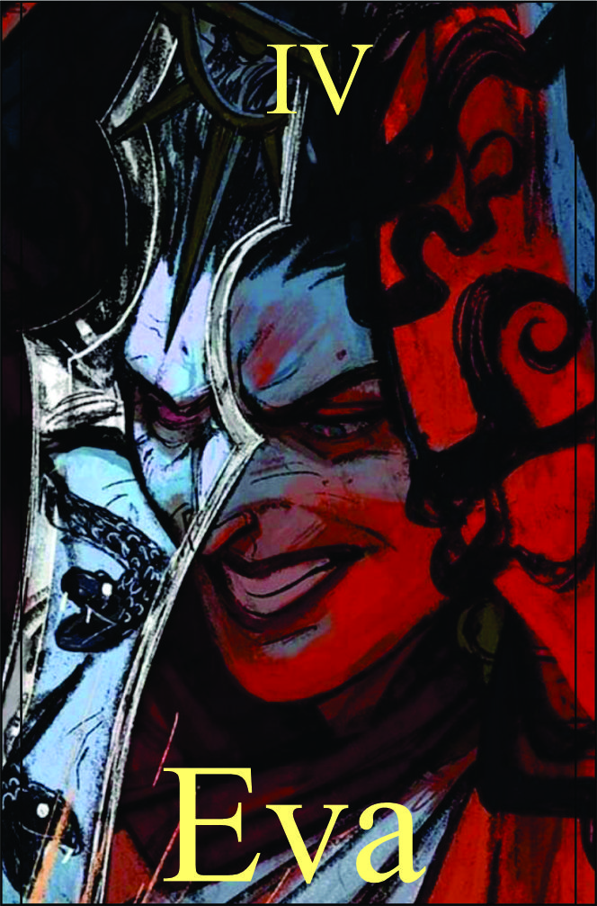

Eva
Têndencia: Maligno
Passiva:
Mente Caótica:
Sua mente é um turbilhão de pensamentos caóticos e perturbadores, o que confunde e distrai seus oponentes. Essa passiva cria uma aura de loucura ao seu redor, afetando a estabilidade mental daqueles que se aproximam de você. Isso pode resultar em dificuldade de concentração, desorientação e diminuição da eficácia de suas habilidades.
Legado 1 - Invocação de Cobras Obscuras:
Com a Invocação de Cobras Obscuras, você tem a capacidade de materializar cobras feitas de tinta escura ou sombras sombrias. Essas cobras são venenosas e ágeis, e podem ser controladas para atacar seus inimigos. Elas possuem presas afiadas e veneno letal, sendo capazes de causar danos significativos aos alvos.
Essa habilidade pode ser usada tanto para fins ofensivos, como atacar diretamente os oponentes, quanto para fins táticos, como distrair ou enredar os inimigos em seu caminho.
Veneno 1 dano por round | +1 para teste | Dano: (Manipulação) + 3
Legado 2 - Controle Mental
Com o Controle Mental, você exerce influência direta sobre a mente do alvo, assumindo o controle total de suas ações e pensamentos. Você pode manipular o alvo para que ele execute suas ordens, agindo como um fantoche nas mãos do manipulador.
Essa habilidade pode ser usada para forçar o alvo a lutar ao seu lado, revelar informações confidenciais, ou até mesmo realizar atos contra a sua própria vontade.
O alvo precisa fazer um teste de consciência | Você tem bônus +2
Condição para ativar a habilidade:
Não poderá fazer um execute nele quando tiver sobre controle.
Legado 3 - Abismo da Insanidade:
Com o Abismo da Insanidade, você libera uma onda avassaladora de energia psíquica distorcida, mergulhando tudo ao seu redor em um estado de caos mental. Essa habilidade afeta todos os seres próximos, causando confusão, desorientação e pânico generalizado.
Aqueles que são afetados pelo Abismo da Insanidade podem experimentar alucinações, paranoias e um intenso terror psicológico. Suas mentes são mergulhadas em um abismo de insanidade, tornando-os incapazes de distinguir a realidade da ilusão.Enquanto o Abismo da Insanidade estiver ativo, você ganha controle sobre os medos e emoções dos outros, manipulando-os de acordo com sua vontade. Isso pode levá-los a agir de forma irracional, cometer erros e se tornarem vulneráveis aos seus ataques.
É importante ressaltar que o uso do Abismo da Insanidade requer um equilíbrio delicado, pois a energia psíquica distorcida também pode afetar você. O controle excessivo sobre a insanidade pode levar à perda de controle de si mesmo e à imersão total no caos mental.
Utilize essa habilidade com cautela e sabedoria, pois os efeitos do Abismo da Insanidade podem ser devastadores para os envolvidos, incluindo você mesmo.
Cada falha resistir Insanidade perde -1 nela, sendo zerada poderá levar execute | Teste é feito com Inteligênca e consciência alvo -2 e você -1 | cada falha recebrá 5 de dano true
Condição para ativar a habilidade:
É necessário estar em um estado de profunda conexão com sua própria loucura e ter concentração máxima.
Legado 3 - Abismo da Insanidade:
Com o Abismo da Insanidade, você libera uma onda avassaladora de energia psíquica distorcida, mergulhando tudo ao seu redor em um estado de caos mental. Essa habilidade afeta todos os seres próximos, causando confusão, desorientação e pânico generalizado.
Aqueles que são afetados pelo Abismo da Insanidade podem experimentar alucinações, paranoias e um intenso terror psicológico. Suas mentes são mergulhadas em um abismo de insanidade, tornando-os incapazes de distinguir a realidade da ilusão.Enquanto o Abismo da Insanidade estiver ativo, você ganha controle sobre os medos e emoções dos outros, manipulando-os de acordo com sua vontade. Isso pode levá-los a agir de forma irracional, cometer erros e se tornarem vulneráveis aos seus ataques.
É importante ressaltar que o uso do Abismo da Insanidade requer um equilíbrio delicado, pois a energia psíquica distorcida também pode afetar você. O controle excessivo sobre a insanidade pode levar à perda de controle de si mesmo e à imersão total no caos mental.
Utilize essa habilidade com cautela e sabedoria, pois os efeitos do Abismo da Insanidade podem ser devastadores para os envolvidos, incluindo você mesmo.
Cada falha resistir Insanidade perde -1 nela, sendo zerada poderá levar execute | Teste é feito com Inteligênca e consciência alvo -2 e você -1 | cada falha recebrá 5 de dano true
Condição para ativar a habilidade:
É necessário estar em um estado de profunda conexão com sua própria loucura e ter concentração máxima.
Legado 4 - Aberração da Loucura:
skin "Aberração da Loucura" permite que você invoque monstros de trevas com olhos vermelhos rubi, que são verdadeiras abominações carregadas de energia de loucura. Essas criaturas sinistras são capazes de explodir em uma aura de energia psíquica quando se aproximam do alvo, causando danos mágicos psíquicos devastadores.
Invocação Aberrante:
Ao ativar essa habilidade, você conjura uma abominável criatura de trevas com olhos vermelhos rubi. Essa entidade se torna seu aliado, obedecendo aos seus comandos e atacando seus inimigos com sua energia psíquica distorcida.A criatura de trevas avança implacavelmente em direção aos alvos designados e, ao se aproximar, explode em uma onda de energia de loucura, causando danos mágicos psíquicos aos inimigos próximos.
Dano Explosão: 15 | Conjurar somente dois
Condição para ativar a habilidade:
É necessário estar em um estado de profunda conexão com sua própria loucura e ter concentração máxima.